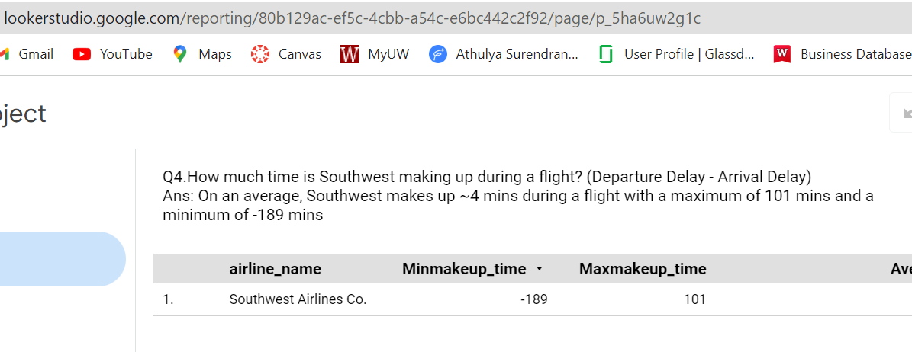

Athulya Surendran Krishnaleela
My Portfolio

Created a comprehensive optimization solution utilizing Excel and Python to minimize total costs, inclusive of manufacturing, shipping and operating expenses, while ensuring fulfillment of demand and adherence to warehouse constraints.

Ranked 1806 out of 4000 in Kaggle data science competition analyzing decline in home sales. Developed predictive models using 4 ML techniques (linear regression, lasso regression, random forest, and gradient boosting) in Python, comparing RMS to identify best model.
Analyzed COVID data in the USA from 2020-2022 to understand distribution of total number of covid cases by state with death count and created a Tableau dynamic Tableau dashboard to showcase the same.

Analyzed Yelp data in SQL/Snowflake from 2005-2018 to understand inflationary trends in the US. Identified top 10 states with highest inflation, top 3 inflationary business categories, and top 5 businesses within the most inflationary category.

Built an automated cloud data pipeline that stores data on Amazon S3, automating extracts and loading process using Fivetran, loading the raw data into Google BigQuery, transforming the data in BigQuery using DBT, and build dashboards in Looker Studio using the transformed data. The pipeline enabled seamless data flow from storage to analysis, improving efficiency in working with data.
About
I am a highly motivated individual with a passion for data science and analytics for using data to solve complex business problems. I am a Master of Science in Business Analytics candidate from the University of Wisconsin-Madison and hold a Bachelor's degree in Electrical and Electronics Engineering from the National Institute of Technology, Calicut. I have a wide range of technical skills, including Python, R, SQL, Tableau, and many other tools, and have experience in machine learning, optimization, and data analysis. In my previous professional experience, I have worked in consulting, market research, and IT operations, leading workshops, conducting research, and mentoring colleagues. My strength lies in my ability to apply my technical skills to real-world problems and communicate complex ideas in a clear and concise manner. I am a quick learner, adaptable, and passionate about helping organizations use data to make informed decisions. I look forward to collaborating with individuals and organizations to achieve their goals through data-driven insights.
My Skills
Tools
-
• Python
• R
• SQL
• Advanced Excel
• Tableau
• DBT
• Google BigQuery
• Amazon S3
• Amazon EMR
• AWS Sagemaker
• Amazon Redshift
• Fivetran
• Snowflake
• SAS
• SAP
• Looker Studio
• Data Robot
• PowerBI
• Azure Databricks
• Jira
Satistical Methods
-
• Hypothesis Testing
• A/B Testing
• Sample size estimation
• Monte Carlo Simulation
• Markov Chains
• Prescriptive analysis
• Optimization
• General Additive Methods
• Decision trees
• Clustering
• Time series analysis
• Neural network
• Regressions
• PCA
• Data mining
• Agile and Scrum planning
• Database management
Education
University of Wisconsin-Madison, Wisconsin School of Business, Madison, WI
Master of Science in Business Analytics Candidate (STEM OPT) (2022 - Present)
• Key Coursework: Machine Learning, Prescriptive Modelling, Causal Methods, Cloud Technology, Applied Temporal Data Analytics, Data Visualization, Data Technology, IT in Supply Chains, Product Management, Project Management • Evaluation and Needs Analyst: CTLM, Wisconsin; Initiated and conducted quantitative surveys & qualitative structured interviews to solicit insights from UW-Madison faculty & instructors. Established impactful curricula based on outcomes.
National Institute of Technology, Calicut
Bachelor of Technology in Electrical and Electronics Engineering (2015 - 2019)
• Unwired Club, Engine Sub Team Member (2016-2018): Organized four workshops focused on solid works and Mars Rover. Conducted Lumos event tech tour for high school students in government schools • Institute of Electrical and Electronics Engineers, Member (2015-2017): Enlisted in solar electrification training program arranged by IEEE Malabar subsection. Volunteered for workshops on MSP430, Energia and MATLAB
Professional Experience
Generac, US
Data Scientist, Consulting Practicum (02/23 - Present)
• Integrating MISO data into Power Insights platform geospatial visualization tool to track demand and supply of electricity and identify energy prices at different times at different locations to optimize DERs. • Developing capacity management model including breakeven analysis comparing pricing for peak and non-peak times while also designing demand response system leveraging real-time data for optimized power distribution to increase cost-effectiveness and improve decision-making in energy management.
ZS Associates, Bengaluru, India
Decision Analytics Associate - Market Research in Customer Insights pod (05/20 - 07/22)
• Led workshop development with client marketing teams to improve sales force effectiveness and market share for $902M HCV drug leading to brand perception improvement of 25% • Designed behavioral science A/B testing research to identify subconscious biases and barriers leading to COVID vaccine hesitancy among 7000 individuals across seven countries; created tactics and quantified an expected hesitant consumer proportion to receive vaccine resulting in leadership recognition and purchase by six Fortune 500 pharmaceuticals. • Created patient journeys across five countries for futuristic therapy in rare disease area to inform therapy commercialization efforts; improved patient experience by 1.5x by understanding pain points, decision drivers and barriers in treatment phase. • Conducted advanced statistical analysis using R-Studio, Excel, and ZS proprietary tools; undertook integration of consumer behavior research with message testing analysis to determine impactful messaging among target population and reduce client promotion cost by 50%. • Facilitated learning sessions for twelve newcomers for Excel and ZS internal tools; mentored four new associates in pod.
M.H.Alshaya.Co, Bengaluru, India
Applications System Coordinator - IT Operations (07/19 - 04/20)
• Implemented and managed SQL database to support retail products in 2500+ stores spread across 15 countries, resulting in streamlined and efficient data infrastructure. • Collaborated with eight internal teams to monitor, optimize, and configure operational flow for in-built store application 'Ares' using SQL leading to enhanced decision-making processes and 20% reduction in operational errors. • Led project plan development, outlining steps for developing customer-specific Ares functional flow; consulted with users to gather information about operational requirements such as needs, objectives, and features, resulting in successful project delivery and 15% improvement in customer satisfaction